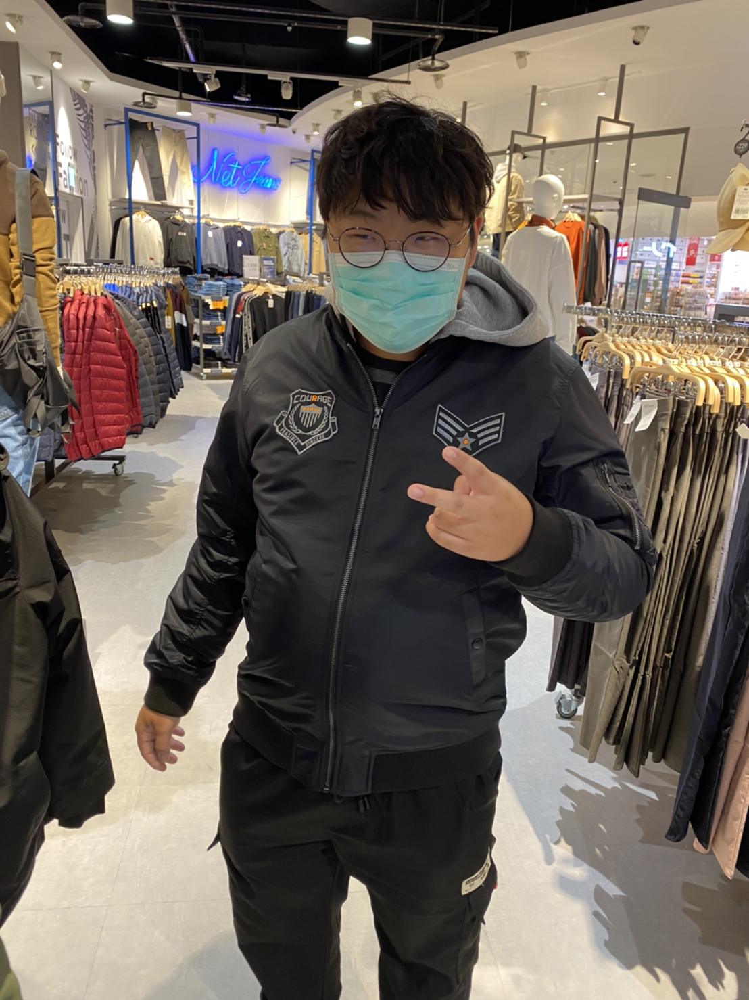

首頁
個人經歷
打FPS遊戲的感想
追韓國女團的心得
對未來的看法
Link 1
Link 2
Link 3
Link 4
個人介紹唷
人生苦短，想做啥就做啥吧
睡你麻痺嗨起來
自我介紹在這喔!
大家好叫家豪，出生於全台灣人認為最甜的城市台南拉,從小生長在一個溫馨的家庭家裡有四個人從小爸爸就對我跟哥哥疼愛有加，但爸爸同時也教了我們許多禮節，所以我很感謝我父母把我生下來並且對我的教育是開放又不失禮貌的,說到我的個性，還不認識我的時候可能覺得我都不講話，但你一跟我熟了你就知道天天嗨起來，不過要該認真的時候我還是可以認真的。

我的興趣
從小到大我的興趣有很多每個階段都不一樣，像是國小的時候我非常喜歡打棒球但也因為打棒球讓我的手受傷了，到了國中之後我開始迷上了LOL這款遊戲所以導致我非常愛打電腦也導致我發胖的原因到了高中之後也都是在打電腦，不過塊大學的時候我拿到了機車駕照從此之後我就愛上了騎車了，所以我到現在的˙興趣就是騎車出去逛逛跑山。
當你騎車跌倒了你就知道不只你人痛錢包也在哭了
回到頂端